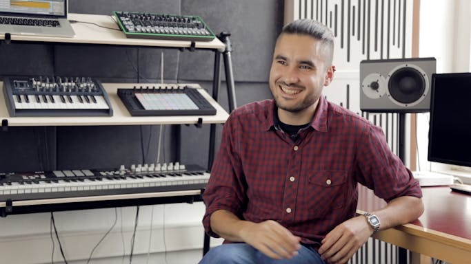
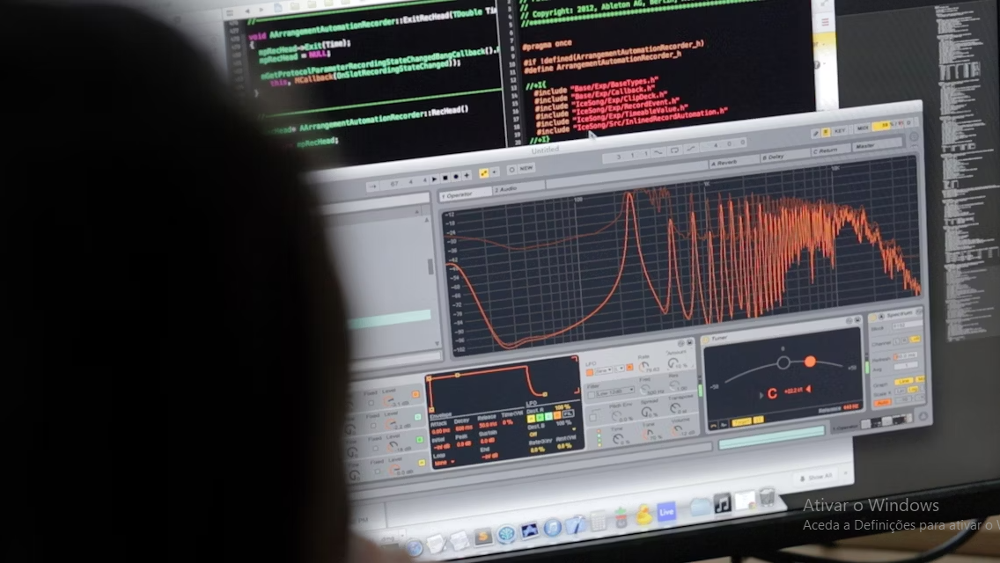

We make Live,
Push and Link -
unique software and hardware for music creation and performance. With
these products, our community of users creates amazing things.
Ableton was founded in 1999 and released the first version of Live in
2001. Our products are used by a community of dedicated musicians,
sound designers, and artists from across the world.
Making music isn´t easy. It takes time, effort, and learning. But when
you´re inthe flow, it´s incredible rewarding.
We feel the same way about making Ableton products. The driving force
behind Ableton is our possion for what we make, and the people we make
it for.

Why Ableton - Juanpe Bolivar
We are more than 350 people from 30 different countries divided
between our headquarters in Berlin and our offices in Los Angeles And
Tokyo.
Most of us are active musicians, producers, and DJs, and many of us
Live and push every day. We come from a wide range of cultural and
professional backgrounds. Some of us have PhDs, some are self-taught,
and most of us are somewhere in between. What connects us is the
shared belief that each of us has the skills and knowledge to
contribute to something big: helping to shape the future of music
culture.
We believe it takes focus to create truly outstanding instruments. We
only work on a few products and we strive to make them great.
Rather than having a one-sizing-fits-all process, we try to give our
people what they need to work their magic and grow. We´ve learned that
achieving the best results comes from building temas that are richly
diverse, and thus able to explore problems from a wider set of
perspectives. We don´t always agree with each other, but opinion and
debate are valued and openly encouraged.

Meet the makers: Ableton developres at work
We´re passionate about what we do, but we´re equally passionate about
improving who we are.
We work hard to foster an enviroment where people can grow both
personally and professionaly, and we strive to create a wealth of
opportuinities to learn from and each other.
Alongside an internal training program, employyes are actively
supported in acquiring new knowledge and skills, coached on applying
these in their daily work. In addition, staff-organized development
and music solons are a chance to discuss new technologies, production
techniques and best practices.
We want our employees to love it here. Since we´re looking for
exceptional talent from around the world, we will do everything we can
to make your transition as easy as possible.
If you´re joining us in Berlin, we´ll help with relocation and
paperwork. We´ll evenly provide you with free German or English
lessons. Plus, working in Germany means you can expect comprehensive
health insurance for you and your family, as well generous maternity
and paternity leave. Office hours are flexible, but it´s not all work;
we have several company and team outings throughout the years as well
as a variety of fun, informal small-group activities.
We´re really proud of the work we´ve done so far. But there´s so
much more to come. If you´d like to be a part of it, please join us.
See latest jobs >